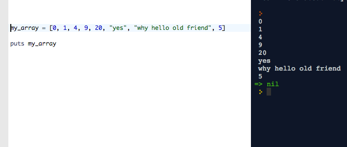
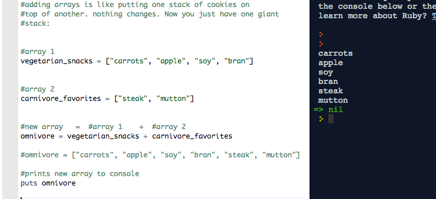
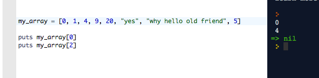
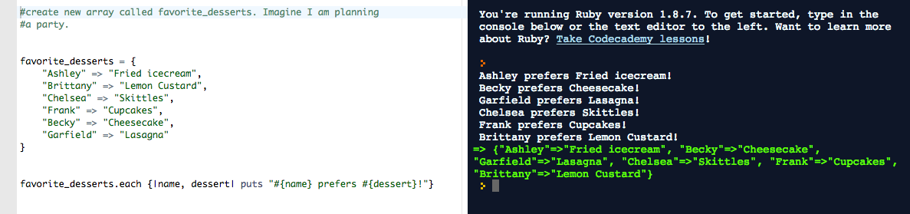

So far what I have learned:
Arrays are collections of objects, which can be numbers or "strings" of text in quotations. They can also be variables, (but the variable will be pointing to the string or number that it represents).
You can do lots of things with arrays, like sort them, count their objects, and add them together:
You can even have arrays that have other arrays as objects, kind of like when a parent has kids and then some of the kids have their own. Kind of.
As far as technical or syntactical things go, arrays are pretty easy to make. In Ruby, you just write the name you'd like to give your array, and then =, then square brackets containing all of your objects, separated by a comma, - like so:
list_of_movies = ["The Shining", "My Cousin Vinny", "Harold and Maude", "Ocean's 11"]
Note that these objects are all strings and so appear in "". Also note that the commas are outside of the string.
One more array:
numbers = [1, 4, 5, 39, 1, 0, -5]
This array has 7 objects, all numbers. It doesn't matter that some are negative or that others repeat.
Arrays all have an 'index' which basically is just that the order of these items matters to them. If I call
numbers[0]
It will return to me 1, which is in the 0th position. (Computers and mathematicians apparently begin counting at 0, not 1, kind of like buildings in European countries. Time for Americans to cross over and also switch to the metric system while we're at it. :))
So, then we have these very similar things called hashes.
Hashes are like arrays, except that instead of having a numerical index of 0, 1, 2, 3, 4 … n for their objects, they can have other things be index keys.
This is useful for storing information. For instance, in our movie example above, we could write a hash that used movies as the index keys, and directors as the object. So we would get:
movie_hash = {
"The Shining" => "Stanley Kubrick",
"My Cousin Vinny" => "Jonathan Lynn",
"Harold and Maude" => "Hal Ashby",
"Ocean's 11” => "Steven Soderbergh"
}
Notice where all of the commas and curly brackets are? These matter to Ruby. There are a couple of other ways to write new hashes, and there are different ways to add new key-value pairs.
But this is the basic idea. Now, when I call movie_hash("The Shining"), I will get:
"Stephen King" returned to me.
That is one way to make a hash. You can also do it a few other ways, including the 'literal' way, where you just say:
my_pet_hash = {"Tweety" => "bird", "Spot" => "dog", "Whiskers" => "cat"}
One cool thing about hashes is that you can use Ruby's .each method to do a series of actions on (or iterate over) the keys and values, treating them differently. For instance, I could say:
And that's all for now. My knowledge is only incipient:) Thanks for reading and I hope you found something useful!
 Twitter
Twitter GitHub
GitHub